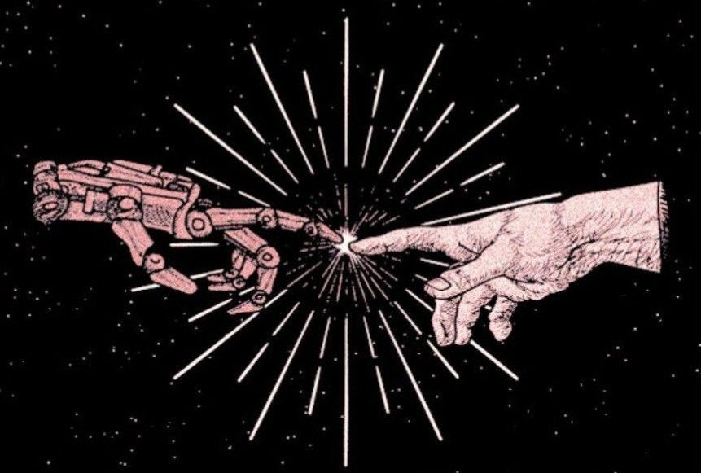
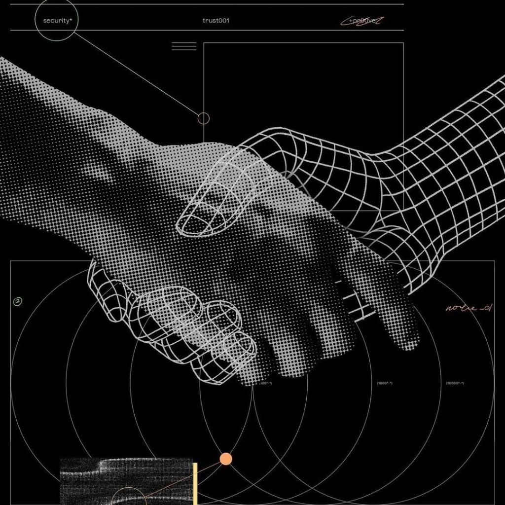
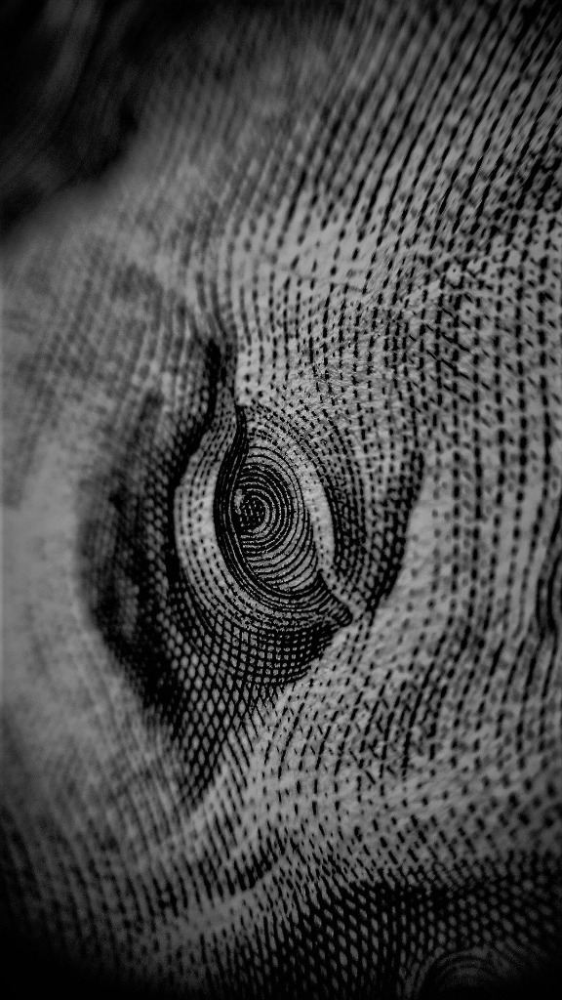
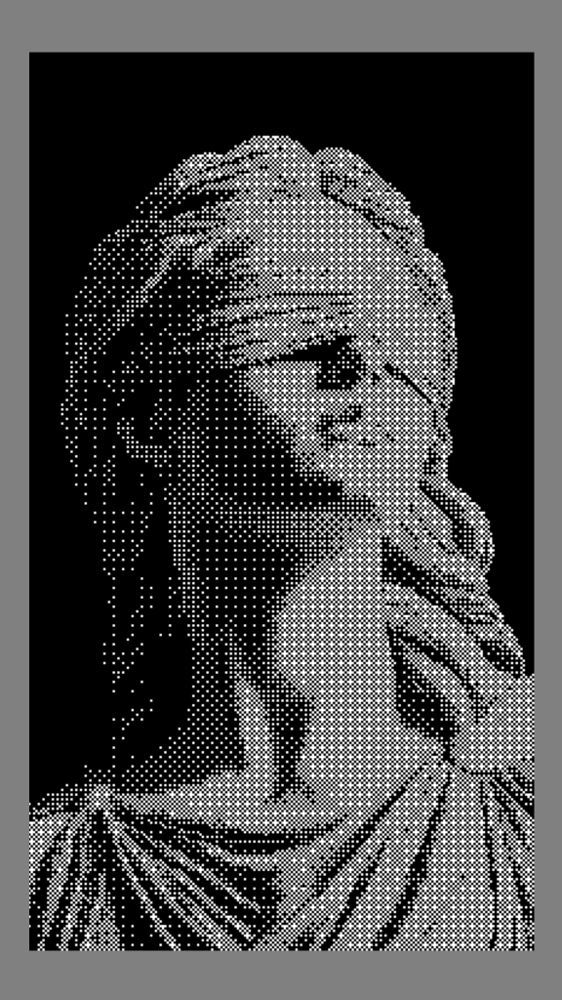

Five references, decoded. Read together they describe a specific language: classical matter rendered in digital textures — engraving, halftone, pixel, wireframe — and a recurring subject: the moment of contact where value changes hands.




The contact moment — hands touching, shaking, appraising. A brokerage's whole business is the instant value changes hands.
Halftone, stipple, intaglio hatching, pixel blocks — the dither as the bridge between classical matter and data.
Technical annotation — "trust001", "security*", "approved" — orbit diagrams and nodes as a designed layer over the figures.
Four of five sit on black. The images are vaults — dark chambers inside a light institutional page.
The structure this implies: the page is paper; the pictures are vaults. Keep the charter document on white — serif, hairlines, positions. Let every image be a dark chamber: halftone, engraved, annotated. The contrast between light document and dark imagery is itself the fusion — institution on the surface, transaction underneath.
| Site moment | Motif | Reference |
|---|---|---|
| Hero — the thesis | The touch | Pixelated Creation (built) or R.2's human×machine variant |
| Appraisal CTA — "what it's worth" | Money watching | R.1 Franklin through the tear / R.4 macro eye |
| Mandate & negotiation | The deal, annotated | R.3 handshake; annotation chrome as house device |
| Section dividers / plates | Intaglio macro · dither | R.4 texture bands, R.5 halftone figures |